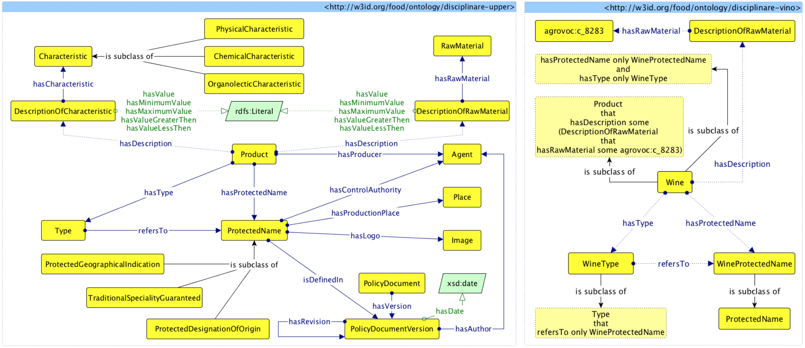
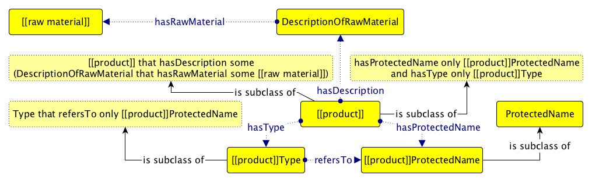
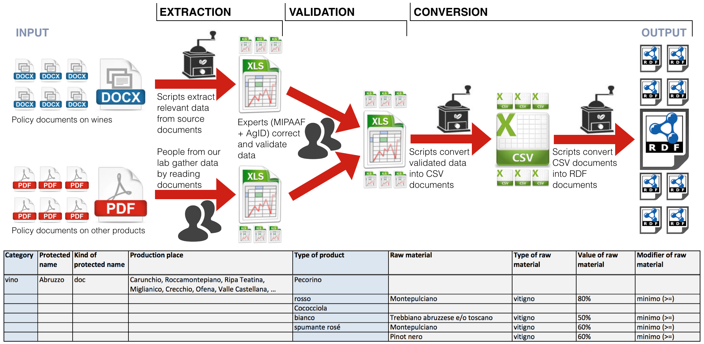

This paper describes the outcome of an e-government project named FOOD, FOod in Open Data, which was carried out in the context of a collaboration between the Institute of Cognitive Sciences and Technologies of the Italian National Research Council, the Italian Ministry of Agriculture (MIPAAF) and the Italian Digital Agency (AgID). In particular, we implemented several ontologies for describing protected names of products (wine, pasta, fish, oil, etc.). In addition, we present the process carried out for producing and publishing a LOD dataset containing data extracted from existing Italian policy documents on such products and compliant with the aforementioned ontologies.
The recent Open Data Barometer report states that open data is entering the mainstream
and the demand is high
. Several concrete initiatives and assessments witness that open data, if correctly adopted, can be an extremely powerful driver of innovation for improving different public sectors as well as impacting scientific progresses. Nevertheless, the presence of (linked) open data is not equally distributed in all public sectors. For instance, in the context of the agriculture and food sector in Italy – that has seen some recent development in other European countries, such as Russia – the management of the European Union (EU) quality schemes for agricultural and food products – i.e., PDO (Protected Designation of Origin), PGI (Protected Geographical Indication) and TSG (Traditional Speciality Guaranteed) – is not fully automatized, and no standards are used in the definition of policy documents (or product specifications) that regulate them.
In this context, the Ministry of Agriculture (MIPAAF), the Italian Digital Agency (AgID), and our laboratory conceived and carried out a project named FOod in Open Data (FOOD). The main goal of FOOD was to extract the data contained in the textual content of the policy documents of Italian agricultural PDO, PGI and TSG products that were available online in PDF, and to make them available as LOD. According to informal interviews done by the MIPAAF, the potential impact and the advantages perceived by all the actors of the project are threefold. On the one hand, the availability of interoperable LOD can pave the way to the construction of new applications, targeting for instance food frauds detection, and production and distribution traceability of quality products. On the other hand, it poses the basis for outlining a proper standardization process for the definition of product specifications. Finally, the use of common models for describing such data can improve the interoperability achievable in the data exchange between MIPAAF and other Public Administrations, which may publish the same type of data on a territory base.
In this paper we describe the artefacts (available in ) produced as outcomes of the FOOD project, ended in 2015. First, a set of ontologies were developed following a methodology that makes use of well-known Ontology Design Patterns (ODPs). Second, a semi-automatic process for producing and publishing LOD, compliant with the developed ontologies, was carried out on more than 800 policy documents of the Italian quality products.
The rest of paper is structured as follows. introduces the ontologies and the methodology that was adopted. describes the process we employed to produce and publish the LOD datasets, compliant with the defined ontologies. discusses examples of reuse of FOOD's ontologies and data and finally, concludes the paper.
The process adopted for the development of the ontologies for describing the Italian policy documents was mainly based on the eXtreme Design methodology , which is a a collaborative, incremental, iterative method for pattern-based ontology design, which we used in several projects in the past. The ontologies developed were also aligned with other existing models, i.e. AGROVOC, DOLCE, DBpedia and Wordnet. The development process was organised in few steps, illustrated as follows.
In the first step, two ontology engineers analysed the large set of source policy documents about agricultural products – more than 800 documents available in either PDF or DOCX – involving domain experts of MIPAAF and AgID so as to identify the main high-level concepts characterising the domain. In addition, they also considered the EU schemes for protected names so as to take into account how they are organized at the European level. Three main interlinked classes have been defined as result of this analysis:
ProtectedName, i.e., a trademark label (e.g., Abruzzo DOC
for a particular Italian wine), issued by an authority granted for certifying agricultural products and foodstuffs, that typically belongs to a certification scheme (i.e., PDO, PGI, TSG);
Type, i.e., a possible type for certain products (e.g., white
or red
for wines);
Product, i.e., the agricultural product or foodstuff (e.g., Abruzzo DOC red wine
) which has a type, refers to a protected name disciplined by a certain policy document, and is described in terms of its raw materials (the particular wine varietal used) and physical/chemical/organolectic characteristics (colour, smell, flavour, etc.).
As shown in the Graffoo diagram in (on the left), in addition to the aforementioned classes, we also modelled several concepts for describing particular features, i.e., the raw material (classes RawMaterial and DescriptionOfRawMaterial), the characteristics (classes Characteristic and DescriptionOfCharacteristic), the producer (an Agent link with the property hasProducer) related to the products. Similarly, other classes and properties defining contextual information of the protected name such the production place (the class Place linked by the property hasProductionPlace), the logo (the class Image linked by the property hasLogo), the control authority (another Agent linked by the property hasControlAuthority) responsible for certifying products of such protected name, and the particular version of the policy document (the class PolicyDocumentVersion) source of all the information related.
It is worth noticing that such upper
ontology reuses several existing ontology design patterns that were considered also during the development, i.e., the pattern Description (for representing raw materials and other product characteristics), the pattern Place (for modelling the production place), the pattern Classification (for expressing both the different characteristics of the products and the quality schemes defined at EU level), and the pattern Information Realization (for relating policy documents with their various versions released during time).

Then, since the ontology had to be appropriately extended according to all the twenty kinds of products described in the policy documents, we decided to involve three more ontology engineers, with different skills and level of expertise, for speeding up the development process. We provided a generic Graffoo template (shown in ) created starting from the parts of the upper ontology that had to be extended, so as to guide the development of all the other ontologies in an homogeneous way, independently of the particular ontology engineer assigned as developer of the specific ontologies. Each new ontology was assigned to only one ontology engineer, and the idea was that each engineer had to rename the variables within double square brackets (e.g., [[product]]
) with the appropriate names, thus adding the related labels and comments. The result of this phase produced twenty new Graffoo diagrams organised as the one for wines shown in (on the right).

Then, one of the ontology engineers took the responsibility of substituting all the raw materials identified during the development process with the appropriate concepts defined in AGROVOC, the multilingual agricultural thesaurus created by the Food and Agriculture Organization (FAO).
Once all the diagrams were finished and stable, we produced all the related OWL files, one for each diagram, by means of DiTTO , i.e., a Web application that is able to convert Graffoo diagrams into OWL automatically. Separately, some additional OWL files have been created, so as to map all the developed ontologies with DBpedia, DOLCE, WordNet, and the used ontology design patterns.
The documentation of all the ontologies was generated by using LODE , a tool that is able to produce human-readable HTML documents describing an ontology starting from the annotations it contains.
The other main goal of the project aimed at creating LOD datasets containing the data extracted from 847 policy documents on protected names – provided by MIPAAF and publicly available online – according to the ontologies presented in .
At a first reading, the main parts of the documents have a pretty similar organisation: each document consists of at least four articles. The first article usually defines the protected name and the types of related products of such name. The second article defines the raw materials which contribute to the products composition. The third article provides a precise description of the production area. Finally, the rest of the articles usually describe physical/chemical/organoleptic characteristics of the products, introduce historical/geographical evidences supporting the described production area, and describe the methods used for producing the products of that protected name.
The general structure of the documents is shared in principle. In the light of this observation, our initial idea was to develop some mechanisms for extracting all the relevant information within such documents in an automatic fashion. We started trying to develop scripts for extracting relevant data from all the 563 policy documents about wine we had available in DOCX format – the extraction was carried by looking for textual patterns we knew in advance. However, we realized that it was not possible to address this extraction for all the policy documents automatically and to preserve a good and appropriate quality of the data extracted at the same time. There was a rather high degree of heterogeneity among documents describing different kinds of products (e.g., wines vs. bread), as well as among documents describing products of the same type, mainly due to the fact that no predefined templates was actually used for guiding their creation, and that such authorial activity was held across many years and by several authors. In addition, several documents were actually images derived from scanned copies of old paper policy documents, stored as PDF files. Hence, for the remaining 274 PDF documents regarding agricultural products different from wine, we decided to carry out a manual extraction since the beginning.
The pipeline we followed for processing policy documents is shown in the top part of , and was organised in three main steps:
extraction – we developed scripts and carried out human-based data extractions from policy documents through the use of Excel files;
validation – the domain experts from MIPAAF and AgID were involved so as to correct and validate the produced Excel documents (that are included in and briefly summarised in the bottom part of );
conversion – the validated Excel data were, finally, processed by other scripts we developed for converting such data into RDF according to the FOOD ontologies.
In the latter step we also used TagMe so as to extract DBpedia entities referring to villages, cities and regions from the textual description of the production places. The entities extracted by TagMe were revised by humans as well, so as to remove as more mistakes as possible from the data, and then they were aligned with other existing LOD developed in the past by the Italian Public Administration, i.e., SPCData and the LOD of the Italian National Institute of Statistics. Considering the novelty of these data, we have not found any other relevant dataset to link with.

The obtained RDF data contain information defining the protected name and various types of related product, the production area of the protected name, the raw materials and the characteristics related with such kinds of products, as shown in the following excerpt (in Turtle with English IRIs for the sake of clarity – while original IRIs are in Italian):
product:wine-abruzzo-red a upper:Product , wine:Wine ;
rdfs:label "Vino 'Abruzzo' Rosso" ;
upper:hasProtectedName name:wine-abruzzo ;
upper:hasDescription
descraw:wine-abruzzo-red-raw-material-1 ,
descraw:wine-abruzzo-red-raw-material-2 ;
upper:hasType type:red-wine .
descraw:wine-abruzzo-red-raw-material-1 a upper:DescriptionOfRawMaterial ;
rdfs:label "Vitigno 'Montepulciano': minimo (>=) 80%" ;
upper:hasRawMaterial rawmat:vine-variety-montepulciano ;
upper:hasMinimumValue "80%" .
All the produced resources were defined by means of permanent IRIs via w3id.org. The IRI naming convention used for each resource was http://w3id.org/food/data/[[class]]/[[product]] (e.g., http://w3id.org/food/data/prodotto/vino-abruzzo-rosso). In addition, the datasets also include provenance information (defined using DCAT and PROV-O) about the whole production and publication process. The ontologies, the dataset and the provenance metadata are available in and can be queried by using the SPARQL endpoint provided by the Fuseki 2 triple store of the project. All the data have been released under the license CC BY 4.0, and can be browsed and retrieved in different formats by means of LODView.
The LOD paradigm is still not fully adopted in the Italian public sector, although national governmental guidelines encourage public administrations to release their data under the form of LOD for semantic interoperability purposes . Thus, FOOD represents one of a few very recent LOD initiatives, and the first comprehensive project, in the Italian food domain.
In this scenario, early this year we recorded already the reuse of the FOOD upper ontology described in . The Italian region Umbria published, in its regional open data portal, a number of datasets also available as LOD, and some of these concern PDO/PGI/TSG quality schemes of Umbrian products. In particular, they reused the three main classes of the upper ontology, i.e., Product, ProtectedName and Type.
Finally, it is worth mentioning an additional initiative that involved, among the others, the data produced in the context of the FOOD project. In October 2015, AgID carried out a national hackathon, where a group of young guys won a price for their idea of an app named eat it , based on the FOOD LOD datasets. To the best of our knowledge, at the time of this writing, the application is still under development.
In this paper we have described the outcomes (available in ) of an e-government project named FOOD – FOod in Open Data, which was carried out in the context of a collaboration between ISTC-CNR, MIPAAF and AgID, and that concerned the development of ontologies for describing PDO, PGI and TSG products, and the creation of LOD datasets containing data, extracted from existing Italian policy documents on protected names.
The main lesson learnt from the whole process was that the automatic extraction of data from the policy documents – even when they are generally structured similarly and provided in easy-to-process formats (i.e., DOCX), as for wines – it is quite difficult and the results are far from the quality required for being published. In fact, the correction introduced by the experts to the data extracted from such policy documents were quite huge. A posteriori, a manual extraction of such data, that could be possible in the same amount of time, would have prevent the introduction of such a large number of mistakes. However, the analysis done on these policy documents about wines have enabled the refactor of existing templates for policy documents so as to write relevant information in an homogeneous manner – that would be a great simplification for guaranteeing some significant automatic processing of such documents in the future. To this end, we are currently discussing with the MIPAAF about possible strategies for integrating our data extraction process in their workflow.
The project was partially funded by MIPAAF and AgID in the context of a formal agreement established in accordance to article 15 of the Italian law no. 241/1990 . We would like to thank Andrea Giovanni Nuzzolese, Daria Spampinato and the colleagues of IVALSA Department of the Italian National Research Council for their valuable technical contributions.
Falco, R., Gangemi, A., Peroni, S., Vitali, F. (2014). Modelling OWL ontologies with Graffoo. In The Semantic Web: ESWC 2014 Satellite Events: 320–325. http://dx.doi.org/10.1007/978-3-319-11955-7_42
Gangemi, A., Peroni, S. (2013). DiTTO: Diagrams Transformation inTo OWL. In Proceedings of the ISWC 2013 Posters & Demonstrations Track. http://ceur-ws.org/Vol-1035/iswc2013_demo_2.pdf
Presutti, V., Daga, E., Gangemi, A., Blomqvist, E. (2009). eXtreme Design with Content Ontology Design Patterns. In Proceedings of the 1st Workshop on Ontology Patterns (WOP 2009). http://ceur-ws.org/Vol-516/pap21.pdf
Peroni, S., Shotton, D., Vitali, F. (2012). The Live OWL Documentation Environment: a tool for the automatic generation of ontology documentation. In Proceedings of the 18th International Conference on Knowledge Engineering and Knowledge Management (EKAW 2012): 398–412. http://dx.doi.org/10.1007/978-3-642-33876-2_35
Peroni, S., Lodi, G., Asprino, L., Gangemi, A., Nuzzolese, A. G., Presutti, V., Spampinato, D. (2016). FOOD resources: ontologies and data. Figshare. http://dx.doi.org/10.6084/m9.figshare.3187903
Ferragina, P., Scaiella, U. (2010). TAGME: On-the-fly Annotation of Short Text Fragments (by Wikipedia Entities). In Proceedings of the 19th ACM International Conference on Information and Knowledge Management (CIKM 2010): 1625–1628. http://dx.doi.org/10.1145/1871437.1871689
SPC Board (2012). An Overview of the Italian Guidelines for Semantic Interoperability through Linked Open Data
. http://www.agid.gov.it/sites/default/files/documentazione_trasparenza/semanticinteroperabilitylod_en_3.pdf
Kolchin, M., Chistyakov, A., Lapaev, M., Khaydarova, R. (2015). FOODpedia: Russian Food Products as a Linked Data Dataset. In The Semantic Web: ESWC 2015 Satellite Events: 87–90. http://dx.doi.org/10.1007/978-3-319-25639-9_17
Bread, cereal, cheese, essential oil, fish, fruit, honey, liquorice, meat, mollusc, oil, pasta, ricotta, saffron, salt, salume, sweet, vegetable, vinegar, wine.